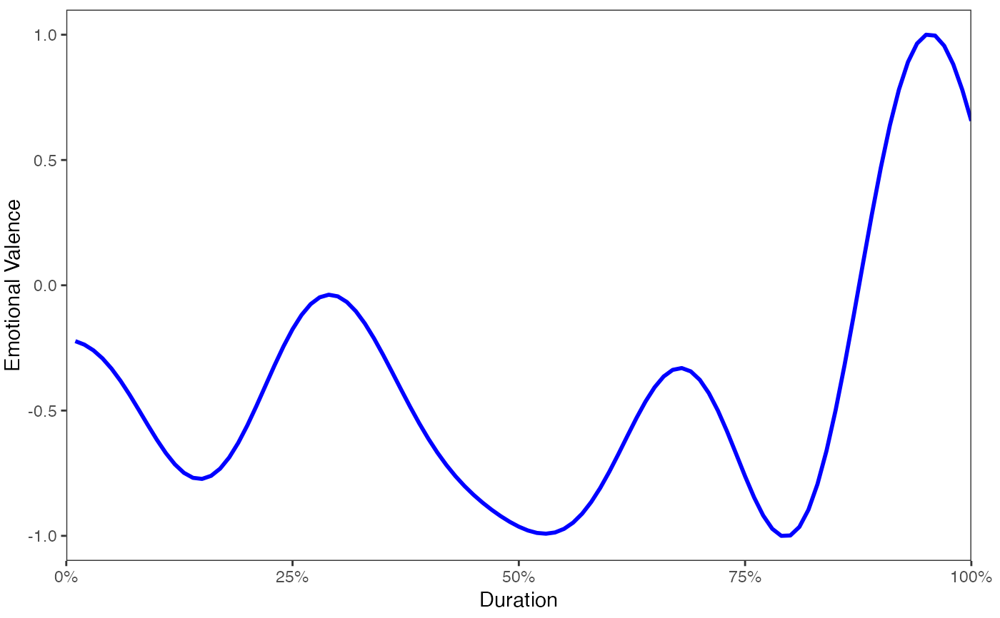
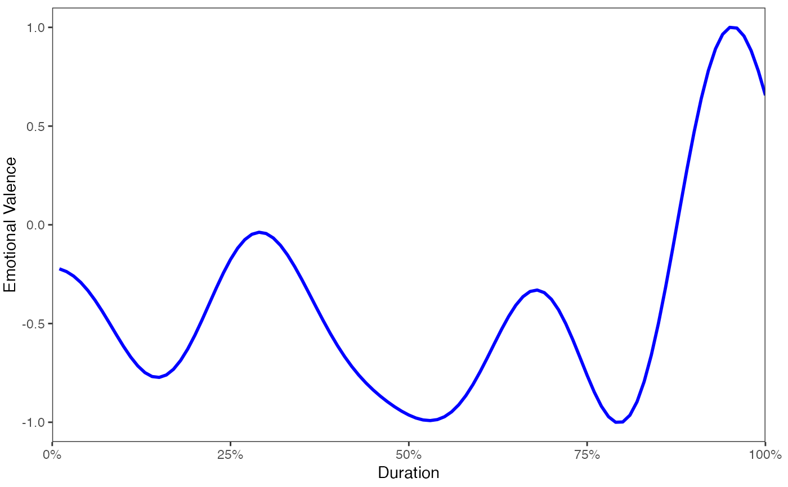

Approximate the sentiment (polarity) of text by sentence. This function allows
the user to easily alter (add, change, replace) the default polarity an
valence shifters dictionaries to suit the context dependent needs of a particular
data set. See the polarity_dt and valence_shifters_dt arguments
for more information. Other hyper-parameters may add additional fine tuned
control of the algorithm that may boost performance in different contexts.
Usage
sentiment(
text.var,
polarity_dt = lexicon::hash_sentiment_jockers_rinker,
valence_shifters_dt = lexicon::hash_valence_shifters,
hyphen = "",
amplifier.weight = 0.8,
n.before = 5,
n.after = 2,
question.weight = 1,
adversative.weight = 0.25,
neutral.nonverb.like = FALSE,
missing_value = 0,
retention_regex = "\\d:\\d|\\d\\s|[^[:alpha:]',;: ]",
...
)Arguments
- text.var
The text variable. Can be a
get_sentencesobject or a raw character vector thoughget_sentencesis preferred as it avoids the repeated cost of doing sentence boundary disambiguation every timesentimentis run.- polarity_dt
A data.table of positive/negative words and weights with x and y as column names. The lexicon package has several dictionaries that can be used, including:
Additionally, the
as_keyfunction can be used to make a sentiment frame suitable forpolarity_dt. This takes a 2 column data.frame with the first column being words and the second column being polarity values. Note that as of version 1.0.0 sentimentr switched from the Liu & HU (2004) dictionary as the default to Jocker's (2017) dictionary from the syuzhet package. Uselexicon::hash_sentiment_huliuto obtain the old behavior.- valence_shifters_dt
A data.table of valence shifters that can alter a polarized word's meaning and an integer key for negators (1), amplifiers [intensifiers] (2), de-amplifiers [downtoners] (3) and adversative conjunctions (4) with x and y as column names.
- hyphen
The character string to replace hyphens with. Default replaces with nothing so 'sugar-free' becomes 'sugarfree'. Setting
hyphen = " "would result in a space between words (e.g., 'sugar free'). Typically use either " " or default "".- amplifier.weight
The weight to apply to amplifiers/de-amplifiers [intensifiers/downtoners] (values from 0 to 1). This value will multiply the polarized terms by 1 + this value.
- n.before
The number of words to consider as valence shifters before the polarized word. To consider the entire beginning portion of a sentence use
n.before = Inf.- n.after
The number of words to consider as valence shifters after the polarized word. To consider the entire ending portion of a sentence use
n.after = Inf.- question.weight
The weighting of questions (values from 0 to 1). Default is 1. A 0 corresponds with the belief that questions (pure questions) are not polarized. A weight may be applied based on the evidence that the questions function with polarized sentiment. In an opinion tasks such as a course evalaution the questions are more likely polarized, not designed to gain information. On the other hand, in a setting with more natural dialogue, the question is less likely polarized and is likely to function as a means to gather information.
- adversative.weight
The weight to give to adversative conjunctions or contrasting conjunctions (e.g., "but") that overrule the previous clause (Halliday & Hasan, 2013). Weighting a contrasting statement stems from the belief that the adversative conjunctions like "but", "however", and "although" amplify the current clause and/or down weight the prior clause. If an adversative conjunction is located before the polarized word in the context cluster the cluster is up-weighted 1 + number of occurrences of the adversative conjunctions before the polarized word times the weight given (\(1 + N_{adversative\,conjunctions} * z_2\) where \(z_2\) is the
adversative.weight). Conversely, an adversative conjunction found after the polarized word in a context cluster down weights the cluster 1 - number of occurrences of the adversative conjunctions after the polarized word times the weight given (\(1 + N_{adversative\,conjunctions}*-1 * z_2\)). These are added to the deamplifier and amplifier weights and thus the down weight is constrained to -1 as the lower bound. Set to zero to remove adversative conjunction weighting.- neutral.nonverb.like
logical. If
TRUE, and 'like' is found in thepolarity_dt, when the word 'like' is preceded by one of the following linking verbs:"'s","was","is","has","am","are","'re","had", or"been"it is neutralized as this non-verb form of like is not likely polarized. This is a poor man's part of speech tagger, maintaining the balance between speed and accuracy. The word 'like', as a verb, tends to be polarized and is usually preceded by a noun or pronoun, not one of the linking verbs above. This hyper parameter doesn't always yield improved results depending on the context of where the text data comes from. For example, it is likely to be more useful in literary works, where like is often used in non-verb form, than product comments. Use of this parameter will add compute time, this must be weighed against the need for accuracy and the likeliness that more accurate results will come from setting this argument toTRUE.- missing_value
A value to replace
NA/NaNwith. UseNULLto retain missing values.- retention_regex
A regex of what characters to keep. All other characters will be removed. Note that when this is used all text is lower case format. Only adjust this parameter if you really understand how it is used. Note that swapping the
\\p{L}for[^[:alpha:];:,\']may retain more alpha letters but will likely decrease speed. See examples below for how to test the need for\\p{L}.- ...
Ignored.
Value
Returns a data.table of:
element_id - The id number of the original vector passed to
sentimentsentence_id - The id number of the sentences within each
element_idword_count - Word count
sentiment - Sentiment/polarity score (note: sentiments less than zero is negative, 0 is neutral, and greater than zero positive polarity)
Details
The equation used by the algorithm to assign value to polarity of each sentence fist utilizes the sentiment dictionary to tag polarized words. Each paragraph (\(p_i = \{s_1, s_2, ..., s_n\}\)) composed of sentences, is broken into element sentences (\(s_i,j = \{w_1, w_2, ..., w_n\}\)) where \(w\) are the words within sentences. Each sentence (\(s_j\)) is broken into a an ordered bag of words. Punctuation is removed with the exception of pause punctuations (commas, colons, semicolons) which are considered a word within the sentence. I will denote pause words as \(cw\) (comma words) for convenience. We can represent these words as an i,j,k notation as \(w_{i,j,k}\). For example \(w_{3,2,5}\) would be the fifth word of the second sentence of the third paragraph. While I use the term paragraph this merely represent a complete turn of talk. For example t may be a cell level response in a questionnaire composed of sentences.
The words in each sentence (\(w_{i,j,k}\)) are searched and compared to a dictionary of polarized words (e.g., Jockers (2017) dictionary found in the lexicon package). Positive (\(w_{i,j,k}^{+}\)) and negative (\(w_{i,j,k}^{-}\)) words are tagged with a \(+1\) and \(-1\) respectively. I will denote polarized words as \(pw\) for convenience. These will form a polar cluster (\(c_{i,j,l}\)) which is a subset of the a sentence (\(c_{i,j,l} \subseteq s_i,j \)).
The polarized context cluster (\(c_{i,j,l}\)) of words is pulled from around
the polarized word (\(pw\)) and defaults to 4 words before and two words
after \(pw\)) to be considered as valence shifters. The cluster can be represented as
(\(c_{i,j,l} = \{pw_{i,j,k - nb}, ..., pw_{i,j,k} , ..., pw_{i,j,k - na}\}\)),
where \(nb\) & \(na\) are the parameters n.before and n.after
set by the user. The words in this polarized context cluster are tagged as
neutral (\(w_{i,j,k}^{0}\)), negator (\(w_{i,j,k}^{n}\)),
amplifier [intensifier]] (\(w_{i,j,k}^{a}\)), or de-amplifier
[downtoner] (\(w_{i,j,k}^{d}\)). Neutral words hold no value in
the equation but do affect word count (\(n\)). Each polarized word is then
weighted (\(w\)) based on the weights from the polarity_dt argument
and then further weighted by the function and number of the valence shifters
directly surrounding the positive or negative word (\(pw\)). Pause
(\(cw\)) locations (punctuation that denotes a pause including commas,
colons, and semicolons) are indexed and considered in calculating the upper
and lower bounds in the polarized context cluster. This is because these marks
indicate a change in thought and words prior are not necessarily connected
with words after these punctuation marks. The lower bound of the polarized
context cluster is constrained to
\(\max \{pw_{i,j,k - nb}, 1, \max \{cw_{i,j,k} < pw_{i,j,k}\}\}\) and the upper bound is
constrained to \(\min \{pw_{i,j,k + na}, w_{i,jn}, \min \{cw_{i,j,k} > pw_{i,j,k}\}\}\)
where \(w_{i,jn}\) is the number of words in the sentence.
The core value in the cluster, the polarized word is acted upon by valence shifters. Amplifiers (intensifiers) increase the polarity by 1.8 (.8 is the default weight (\(z\))). Amplifiers (\(w_{i,j,k}^{a}\)) become de-amplifiers if the context cluster contains an odd number of negators (\(w_{i,j,k}^{n}\)). De-amplifiers (downtoners) work to decrease the polarity. Negation (\(w_{i,j,k}^{n}\)) acts on amplifiers/de-amplifiers as discussed but also flip the sign of the polarized word. Negation is determined by raising -1 to the power of the number of negators (\(w_{i,j,k}^{n}\)) + 2. Simply, this is a result of a belief that two negatives equal a positive, 3 negatives a negative and so on.
The adversative conjunctions (i.e., 'but', 'however', and 'although') also weight the context cluster. A adversative conjunction before the polarized word (\(w_{adversative\,conjunction}, ..., w_{i, j, k}^{p}\)) up-weights the cluster by \(1 + z_2 * \{|w_{adversative\,conjunction}|, ..., w_{i, j, k}^{p}\}\) (.85 is the default weight (\(z_2\))). An adversative conjunction after the polarized word down-weights the cluster by \(1 + \{w_{i, j, k}^{p}, ..., |w_{adversative\,conjunction}| * -1\} * z_2\). The number of occurrences before and after the polarized word are multiplied by 1 and -1 respectively and then summed within context cluster. It is this value that is multiplied by the weight and added to 1. This corresponds to the belief that an adversative conjunction makes the next clause of greater values while lowering the value placed on the prior clause.
The researcher may provide a weight \(z\) to be utilized with amplifiers/de-amplifiers (default is .8; de-amplifier weight is constrained to -1 lower bound). Last, these weighted context clusters (\(c_{i,j,l}\)) are summed (\(c'_{i,j}\)) and divided by the square root of the word count (\(\sqrt{w_{i,jn}}\)) yielding an unbounded polarity score (\(\delta\)) for each sentence.
$$\delta=\frac{c'_{i,j}}{\sqrt{w_{i,jn}}}$$
Where:
$$c'_{i,j}=\sum{((1 + w_{amp} + w_{deamp})\cdot w_{i,j,k}^{p}(-1)^{2 + w_{neg}})}$$
$$w_{amp}= (w_{b} > 1) + \sum{(w_{neg}\cdot (z \cdot w_{i,j,k}^{a}))}$$
$$w_{deamp} = \max(w_{deamp'}, -1)$$
$$w_{deamp'}= (w_{b} < 1) + \sum{(z(- w_{neg}\cdot w_{i,j,k}^{a} + w_{i,j,k}^{d}))}$$
$$w_{b} = 1 + z_2 * w_{b'}$$
$$w_{b'} = \sum{\\(|w_{adversative\,conjunction}|, ..., w_{i, j, k}^{p}, w_{i, j, k}^{p}, ..., |w_{adversative\,conjunction}| * -1}\\)$$
$$w_{neg}= \left(\sum{w_{i,j,k}^{n}}\right) \bmod {2}$$
Note
The polarity score is dependent upon the polarity dictionary used.
This function defaults to a combined and augmented version of Jocker's (2017)
[originally exported by the syuzhet package] & Rinker's augmented Hu & Liu (2004)
dictionaries in the lexicon package, however, this may not be appropriate, for
example, in the context of children in a classroom. The user may (is
encouraged) to provide/augment the dictionary (see the as_key
function). For instance the word "sick" in a high school setting may mean
that something is good, whereas "sick" used by a typical adult indicates
something is not right or negative connotation (deixis).
References
Jockers, M. L. (2017). Syuzhet: Extract sentiment and plot arcs from text. Retrieved from https://github.com/mjockers/syuzhet
Hu, M., & Liu, B. (2004). Mining opinion features in customer reviews. National Conference on Artificial Intelligence.
Halliday, M. A. K. & Hasan, R. (2013). Cohesion in English. New York, NY: Routledge.
https://www.slideshare.net/jeffreybreen/r-by-example-mining-twitter-for
http://hedonometer.org/papers.html Links to papers on hedonometrics
See also
Original URL: https://github.com/trestletech/Sermon-Sentiment-Analysis
Other sentiment functions:
sentiment_by()
Examples
mytext <- c(
'do you like it? But I hate really bad dogs',
'I am the best friend.',
"Do you really like it? I'm not a fan",
"It's like a tree."
)
## works on a character vector but not the preferred method avoiding the
## repeated cost of doing sentence boundary disambiguation every time
## `sentiment` is run. For small batches the loss is minimal.
if (FALSE) {
sentiment(mytext)
}
## preferred method avoiding paying the cost
mytext <- get_sentences(mytext)
sentiment(mytext)
#> element_id sentence_id word_count sentiment
#> 1: 1 1 4 0.2500000
#> 2: 1 2 6 -1.8677359
#> 3: 2 1 5 0.5813777
#> 4: 3 1 5 0.4024922
#> 5: 3 2 4 0.0000000
#> 6: 4 1 4 0.0000000
sentiment(mytext, question.weight = 0)
#> element_id sentence_id word_count sentiment
#> 1: 1 1 4 0.0000000
#> 2: 1 2 6 -1.8677359
#> 3: 2 1 5 0.5813777
#> 4: 3 1 5 0.0000000
#> 5: 3 2 4 0.0000000
#> 6: 4 1 4 0.0000000
sam_dat <- get_sentences(gsub("Sam-I-am", "Sam I am", sam_i_am))
(sam <- sentiment(sam_dat))
#> element_id sentence_id word_count sentiment
#> 1: 1 1 3 0.0000000
#> 2: 2 1 3 0.0000000
#> 3: 3 1 NA 0.0000000
#> 4: 4 1 4 0.0000000
#> 5: 5 1 4 0.0000000
#> ---
#> 193: 165 2 5 0.2683282
#> 194: 166 1 4 0.2500000
#> 195: 167 1 4 0.0000000
#> 196: 168 1 2 0.3535534
#> 197: 169 1 5 0.2236068
plot(sam)
plot(sam, scale_range = TRUE, low_pass_size = 5)
plot(sam, scale_range = TRUE, low_pass_size = 10)
 if (FALSE) ## legacy transform functions from suuzhet
plot(sam, transformation.function = syuzhet::get_transformed_values)
plot(sam, transformation.function = syuzhet::get_transformed_values,
scale_range = TRUE, low_pass_size = 5)
#> Warning: This function is maintained for legacy purposes. Consider using get_dct_transform() instead.

y <- get_sentences(
"He was not the sort of man that one would describe as especially handsome."
)
sentiment(y)
#> element_id sentence_id word_count sentiment
#> 1: 1 1 14 0.4810702
sentiment(y, n.before=Inf)
#> element_id sentence_id word_count sentiment
#> 1: 1 1 14 -0.0002672612
if (FALSE) ## Categorize the polarity (tidyverse vs. data.table):
library(dplyr)
sentiment(mytext) %>%
as_tibble() %>%
mutate(category = case_when(
sentiment < 0 ~ 'Negative',
sentiment == 0 ~ 'Neutral',
sentiment > 0 ~ 'Positive'
) %>%
factor(levels = c('Negative', 'Neutral', 'Positive'))
)
#> Error in sentiment(mytext) %>% as_tibble() %>% mutate(category = case_when(sentiment < 0 ~ "Negative", sentiment == 0 ~ "Neutral", sentiment > 0 ~ "Positive") %>% factor(levels = c("Negative", "Neutral", "Positive"))): could not find function "%>%"
library(data.table)
dt <- sentiment(mytext)[, category := factor(fcase(
sentiment < 0, 'Negative',
sentiment == 0, 'Neutral',
sentiment > 0, 'Positive'
), levels = c('Negative', 'Neutral', 'Positive'))][]
#> Warning: Invalid .internal.selfref detected and fixed by taking a (shallow) copy of the data.table so that := can add this new column by reference. At an earlier point, this data.table has been copied by R (or was created manually using structure() or similar). Avoid names<- and attr<- which in R currently (and oddly) may copy the whole data.table. Use set* syntax instead to avoid copying: ?set, ?setnames and ?setattr. If this message doesn't help, please report your use case to the data.table issue tracker so the root cause can be fixed or this message improved.
dt
#> element_id sentence_id word_count sentiment category
#> 1: 1 1 4 0.2500000 Positive
#> 2: 1 2 6 -1.8677359 Negative
#> 3: 2 1 5 0.5813777 Positive
#> 4: 3 1 5 0.4024922 Positive
#> 5: 3 2 4 0.0000000 Neutral
#> 6: 4 1 4 0.0000000 Neutral
dat <- data.frame(
w = c('Person 1', 'Person 2'),
x = c(paste0(
"Mr. Brown is nasty! He says hello. i give him rage. i will ",
"go at 5 p. m. eastern time. Angry thought in between!go there"
), "One more thought for the road! I am going now. Good day and good riddance."),
y = state.name[c(32, 38)],
z = c(.456, .124),
stringsAsFactors = FALSE
)
sentiment(get_sentences(dat$x))
#> element_id sentence_id word_count sentiment
#> 1: 1 1 4 -0.5000000
#> 2: 1 2 3 0.0000000
#> 3: 1 3 4 -0.5000000
#> 4: 1 4 8 0.0000000
#> 5: 1 5 4 -0.3750000
#> 6: 1 6 2 0.0000000
#> 7: 2 1 6 0.0000000
#> 8: 2 2 4 0.0000000
#> 9: 2 3 5 0.6708204
sentiment(get_sentences(dat))
#> w x y z element_id
#> 1: Person 1 Mr. Brown is nasty! New York 0.456 1
#> 2: Person 1 He says hello. New York 0.456 1
#> 3: Person 1 i give him rage. New York 0.456 1
#> 4: Person 1 i will go at 5 p.m. eastern time. New York 0.456 1
#> 5: Person 1 Angry thought in between! New York 0.456 1
#> 6: Person 1 go there New York 0.456 1
#> 7: Person 2 One more thought for the road! Pennsylvania 0.124 2
#> 8: Person 2 I am going now. Pennsylvania 0.124 2
#> 9: Person 2 Good day and good riddance. Pennsylvania 0.124 2
#> sentence_id word_count sentiment
#> 1: 1 4 -0.5000000
#> 2: 2 3 0.0000000
#> 3: 3 4 -0.5000000
#> 4: 4 8 0.0000000
#> 5: 5 4 -0.3750000
#> 6: 6 2 0.0000000
#> 7: 1 6 0.0000000
#> 8: 2 4 0.0000000
#> 9: 3 5 0.6708204
if (FALSE) {
## tidy approach
library(dplyr)
library(magrittr)
hu_liu_cannon_reviews %>%
mutate(review_split = get_sentences(text)) %$%
sentiment(review_split)
}
## Emojis
if (FALSE) {
## Load R twitter data
x <- read.delim(system.file("docs/r_tweets.txt", package = "textclean"),
stringsAsFactors = FALSE)
x
library(dplyr); library(magrittr)
## There are 2 approaches
## Approach 1: Replace with words
x %>%
mutate(Tweet = replace_emoji(Tweet)) %$%
sentiment(Tweet)
## Approach 2: Replace with identifier token
combined_emoji <- update_polarity_table(
lexicon::hash_sentiment_jockers_rinker,
x = lexicon::hash_sentiment_emojis
)
x %>%
mutate(Tweet = replace_emoji_identifier(Tweet)) %$%
sentiment(Tweet, polarity_dt = combined_emoji)
## Use With Non-ASCII
## Warning: sentimentr has not been tested with languages other than English.
## The example below is how one might use sentimentr if you believe the
## language you are working with are similar enough in grammar to for
## sentimentr to be viable (likely Germanic languages)
## english_sents <- c(
## "I hate bad people.",
## "I like yummy cookie.",
## "I don't love you anymore; sorry."
## )
## Roughly equivalent to the above English
danish_sents <- stringi::stri_unescape_unicode(c(
"Jeg hader d\\u00e5rlige mennesker.",
"Jeg kan godt lide l\\u00e6kker is.",
"Jeg elsker dig ikke mere; undskyld."
))
danish_sents
## Polarity terms
polterms <- stringi::stri_unescape_unicode(
c('hader', 'd\\u00e5rlige', 'undskyld', 'l\\u00e6kker', 'kan godt', 'elsker')
)
## Make polarity_dt
danish_polarity <- as_key(data.frame(
x = stringi::stri_unescape_unicode(polterms),
y = c(-1, -1, -1, 1, 1, 1)
))
## Make valence_shifters_dt
danish_valence_shifters <- as_key(
data.frame(x='ikke', y="1"),
sentiment = FALSE,
comparison = NULL
)
sentiment(
danish_sents,
polarity_dt = danish_polarity,
valence_shifters_dt = danish_valence_shifters,
retention_regex = "\\d:\\d|\\d\\s|[^\\p{L}',;: ]"
)
## A way to test if you need [:alpha:] vs \p{L} in `retention_regex`:
## 1. Does it wreck some of the non-ascii characters by default?
sentimentr:::make_sentence_df2(danish_sents)
## 2.Does this?
sentimentr:::make_sentence_df2(danish_sents, "\\d:\\d|\\d\\s|[^\\p{L}',;: ]")
## If you answer yes to #1 but no to #2 you likely want \p{L}
}
if (FALSE) ## legacy transform functions from suuzhet
plot(sam, transformation.function = syuzhet::get_transformed_values)
plot(sam, transformation.function = syuzhet::get_transformed_values,
scale_range = TRUE, low_pass_size = 5)
#> Warning: This function is maintained for legacy purposes. Consider using get_dct_transform() instead.

y <- get_sentences(
"He was not the sort of man that one would describe as especially handsome."
)
sentiment(y)
#> element_id sentence_id word_count sentiment
#> 1: 1 1 14 0.4810702
sentiment(y, n.before=Inf)
#> element_id sentence_id word_count sentiment
#> 1: 1 1 14 -0.0002672612
if (FALSE) ## Categorize the polarity (tidyverse vs. data.table):
library(dplyr)
sentiment(mytext) %>%
as_tibble() %>%
mutate(category = case_when(
sentiment < 0 ~ 'Negative',
sentiment == 0 ~ 'Neutral',
sentiment > 0 ~ 'Positive'
) %>%
factor(levels = c('Negative', 'Neutral', 'Positive'))
)
#> Error in sentiment(mytext) %>% as_tibble() %>% mutate(category = case_when(sentiment < 0 ~ "Negative", sentiment == 0 ~ "Neutral", sentiment > 0 ~ "Positive") %>% factor(levels = c("Negative", "Neutral", "Positive"))): could not find function "%>%"
library(data.table)
dt <- sentiment(mytext)[, category := factor(fcase(
sentiment < 0, 'Negative',
sentiment == 0, 'Neutral',
sentiment > 0, 'Positive'
), levels = c('Negative', 'Neutral', 'Positive'))][]
#> Warning: Invalid .internal.selfref detected and fixed by taking a (shallow) copy of the data.table so that := can add this new column by reference. At an earlier point, this data.table has been copied by R (or was created manually using structure() or similar). Avoid names<- and attr<- which in R currently (and oddly) may copy the whole data.table. Use set* syntax instead to avoid copying: ?set, ?setnames and ?setattr. If this message doesn't help, please report your use case to the data.table issue tracker so the root cause can be fixed or this message improved.
dt
#> element_id sentence_id word_count sentiment category
#> 1: 1 1 4 0.2500000 Positive
#> 2: 1 2 6 -1.8677359 Negative
#> 3: 2 1 5 0.5813777 Positive
#> 4: 3 1 5 0.4024922 Positive
#> 5: 3 2 4 0.0000000 Neutral
#> 6: 4 1 4 0.0000000 Neutral
dat <- data.frame(
w = c('Person 1', 'Person 2'),
x = c(paste0(
"Mr. Brown is nasty! He says hello. i give him rage. i will ",
"go at 5 p. m. eastern time. Angry thought in between!go there"
), "One more thought for the road! I am going now. Good day and good riddance."),
y = state.name[c(32, 38)],
z = c(.456, .124),
stringsAsFactors = FALSE
)
sentiment(get_sentences(dat$x))
#> element_id sentence_id word_count sentiment
#> 1: 1 1 4 -0.5000000
#> 2: 1 2 3 0.0000000
#> 3: 1 3 4 -0.5000000
#> 4: 1 4 8 0.0000000
#> 5: 1 5 4 -0.3750000
#> 6: 1 6 2 0.0000000
#> 7: 2 1 6 0.0000000
#> 8: 2 2 4 0.0000000
#> 9: 2 3 5 0.6708204
sentiment(get_sentences(dat))
#> w x y z element_id
#> 1: Person 1 Mr. Brown is nasty! New York 0.456 1
#> 2: Person 1 He says hello. New York 0.456 1
#> 3: Person 1 i give him rage. New York 0.456 1
#> 4: Person 1 i will go at 5 p.m. eastern time. New York 0.456 1
#> 5: Person 1 Angry thought in between! New York 0.456 1
#> 6: Person 1 go there New York 0.456 1
#> 7: Person 2 One more thought for the road! Pennsylvania 0.124 2
#> 8: Person 2 I am going now. Pennsylvania 0.124 2
#> 9: Person 2 Good day and good riddance. Pennsylvania 0.124 2
#> sentence_id word_count sentiment
#> 1: 1 4 -0.5000000
#> 2: 2 3 0.0000000
#> 3: 3 4 -0.5000000
#> 4: 4 8 0.0000000
#> 5: 5 4 -0.3750000
#> 6: 6 2 0.0000000
#> 7: 1 6 0.0000000
#> 8: 2 4 0.0000000
#> 9: 3 5 0.6708204
if (FALSE) {
## tidy approach
library(dplyr)
library(magrittr)
hu_liu_cannon_reviews %>%
mutate(review_split = get_sentences(text)) %$%
sentiment(review_split)
}
## Emojis
if (FALSE) {
## Load R twitter data
x <- read.delim(system.file("docs/r_tweets.txt", package = "textclean"),
stringsAsFactors = FALSE)
x
library(dplyr); library(magrittr)
## There are 2 approaches
## Approach 1: Replace with words
x %>%
mutate(Tweet = replace_emoji(Tweet)) %$%
sentiment(Tweet)
## Approach 2: Replace with identifier token
combined_emoji <- update_polarity_table(
lexicon::hash_sentiment_jockers_rinker,
x = lexicon::hash_sentiment_emojis
)
x %>%
mutate(Tweet = replace_emoji_identifier(Tweet)) %$%
sentiment(Tweet, polarity_dt = combined_emoji)
## Use With Non-ASCII
## Warning: sentimentr has not been tested with languages other than English.
## The example below is how one might use sentimentr if you believe the
## language you are working with are similar enough in grammar to for
## sentimentr to be viable (likely Germanic languages)
## english_sents <- c(
## "I hate bad people.",
## "I like yummy cookie.",
## "I don't love you anymore; sorry."
## )
## Roughly equivalent to the above English
danish_sents <- stringi::stri_unescape_unicode(c(
"Jeg hader d\\u00e5rlige mennesker.",
"Jeg kan godt lide l\\u00e6kker is.",
"Jeg elsker dig ikke mere; undskyld."
))
danish_sents
## Polarity terms
polterms <- stringi::stri_unescape_unicode(
c('hader', 'd\\u00e5rlige', 'undskyld', 'l\\u00e6kker', 'kan godt', 'elsker')
)
## Make polarity_dt
danish_polarity <- as_key(data.frame(
x = stringi::stri_unescape_unicode(polterms),
y = c(-1, -1, -1, 1, 1, 1)
))
## Make valence_shifters_dt
danish_valence_shifters <- as_key(
data.frame(x='ikke', y="1"),
sentiment = FALSE,
comparison = NULL
)
sentiment(
danish_sents,
polarity_dt = danish_polarity,
valence_shifters_dt = danish_valence_shifters,
retention_regex = "\\d:\\d|\\d\\s|[^\\p{L}',;: ]"
)
## A way to test if you need [:alpha:] vs \p{L} in `retention_regex`:
## 1. Does it wreck some of the non-ascii characters by default?
sentimentr:::make_sentence_df2(danish_sents)
## 2.Does this?
sentimentr:::make_sentence_df2(danish_sents, "\\d:\\d|\\d\\s|[^\\p{L}',;: ]")
## If you answer yes to #1 but no to #2 you likely want \p{L}
}